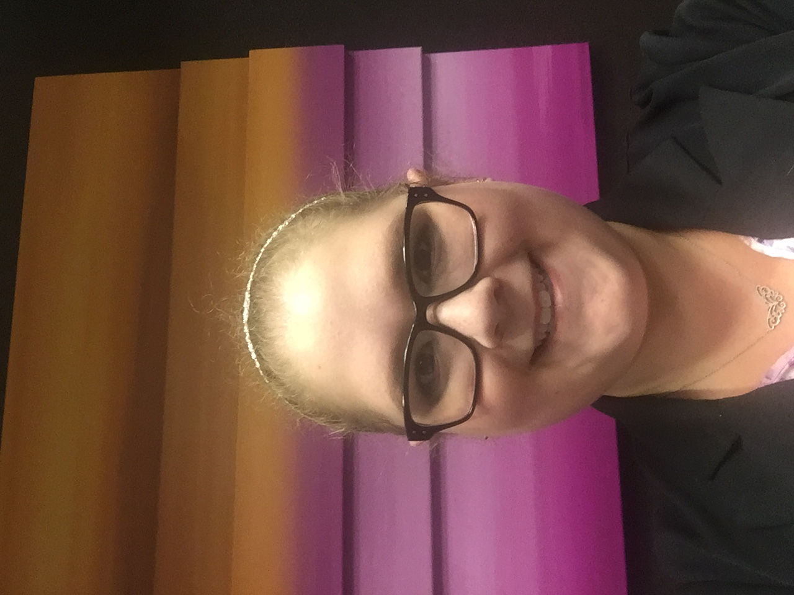

About Me

My name is Rachel Jones. I grew up in the Seattle area. I went to Bainbridge High School where I did running start at Seattle Central CC for my last two year. After high school, I moved to Boise to attend Boise State. I fell in love with Boise and wanted to make a life there. It is still my goal to move back there as soon as possible.
My favorite pasttimes are cooking with my best friend Ginny, spending time with my adorable nieces, Blakely and Maisy, and cuddling with my two dogs, Buster and Tux.
In college, I studied criminal justice with the goal of attending law school. Through a series of life events, I decided law school wasn't in my near future, so I found myself wondering what my future career would look like. Having had several menial jobs since college, I have found myself more and more interested in web development. I have tried teaching myself basic coding, but always got frustrated when I got stuck and couldn't find a solution on my own. I'm really excited to be in the UW Coding Bootcamp to finally learn web dev with the resources to see it through!